About
The CAD systems that I design use functional representations to represent solid models. These f-reps need to be converted into meshes before they can be used in other programs (e.g. to be manufactured on a 3D printer).
There are many meshing algorithms in the literature, but we want one that is:
- Watertight (without any cracks)
- Hierarchical (avoids many tiny triangles)
- Feature-preserving (corners and edges should remain sharp)
This write-up explores 2D implementations of a few common algorithms. We start with Marching Squares, then upgrade to Dual Contouring.
Also, we'll be using Haskell. Hold on to your hats!
Functional representations
We'll start by defining a type for 2D points and a type for our shape functions.
type Point = (Double, Double)
type Shape = Point -> Double
A shape function takes an (x,y) tuple and and returns a value. If this
value is less than or equal to zero, the point (x,y) is inside the shape.
Our first shape will be a circle:
circle :: Point -> Double -> Shape
circle (x0, y0) r (x, y) = sqrt ((x0 - x)**2 + (y0 - y)**2) - r
This function parameterizes a circle with a center and radius, then returns the
distance from any point in the plane to the circle's edge. Thanks to
partial application, you can
call it with just (x,y) r arguments to get a Shape object out.
λ> let c = circle (0,0) 1
λ> c (0,0) -- points inside the circle are negative
-1.0
λ> c (1,0) -- points on the contour are zero
0.0
λ> c (2,0) -- points outside the circle are positive
1.0
We'll also define a set of half-planes, e.g. left 1 means that all points
(x,y) with x <= 1 are part of the shape:
left :: Double -> Shape
left x0 (x, _) = x - x0
right :: Double -> Shape
right x0 (x, _) = x0 - x
lower :: Double -> Shape
lower y0 (_, y) = y - y0
upper :: Double -> Shape
upper y0 (_, y) = y0 - y
Next, let's create operators for union, intersection, and negation:
(∪) :: Shape -> Shape -> Shape
a ∪ b = \p -> min (a p) (b p)
(∩) :: Shape -> Shape -> Shape
a ∩ b = \p -> max (a p) (b p)
inv :: Shape -> Shape
inv a = \p -> -(a p)
The negation operator lets us make cutouts: subtracting b from a is given
by a ∩ (inv b).
We can use these CSG operators and the half-planes defined above to create a rectangle, which is the intersection of four half-planes:
type Min = Point
type Max = Point
rectangle :: Min -> Max -> Shape
rectangle (xmin, ymin) (xmax, ymax) =
right xmin ∩ left xmax ∩ upper ymin ∩ lower ymax
Here's a simple test shape that we'll be using for the rest of this writeup:
hi :: Shape
hi = h ∪ i where
h = (rectangle (0.1, 0.1) (0.25, 0.9) ∪
rectangle (0.1, 0.1) (0.6, 0.35) ∪
circle (0.35, 0.35) 0.25) ∩ inv
(circle (0.35, 0.35) 0.1 ∪
rectangle (0.25, 0.1) (0.45, 0.35))
i = rectangle (0.75, 0.1) (0.9, 0.55) ∪
circle (0.825, 0.75) 0.1
Rendering this to a bitmap is a matter of evaluating the function on many
(x,y) coordinates, then coloring them depending on the function's sign.
This is a very naïve rendering strategy, but it's good enough to put
pixels on the screen.
Here's our testing shape, evaluated as a bitmap:
Quadtrees
Quadtrees are a basic data structure in 2D graphics. Quadtreees are hierarchical: a 2D region is recursively split into four quadrants; each quadrant is either a leaf cell or subdivided further.
They are interesting because they represent a shape with fewer samples than a bitmap: areas that are completely filled or empty can be collapsed into a single cell.
We'll use one type of hierarchical cell and three terminal cells in the tree:
Rootcells contain four subtreesLeafcells are minimum-size and contain the contourEmptyandFullcells are collapsed cells that are empty or full respectively
As motivation, here's a quadtree decomposition of our test shape. Green, grey,
and black squares represent Leaf, Empty, and Full cells respectively.
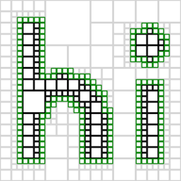
Now that we know what we're looking for, let's start by creating our data type. Subtrees and corners will always be numbered as follows:
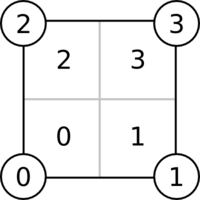
For the purposes of this exercise, we'll make a generic Tree_ type that
stores some kind of data at each leaf, then specialize it to storing the
leaf's corner positions.
data Tree_ a = Root (Tree_ a) (Tree_ a) (Tree_ a) (Tree_ a) |
Empty | Full | Leaf a
deriving (Show, Eq)
type Cell = (Min, Max)
type Tree = Tree_ Cell
Now, let's build a complete tree structure:
buildTree :: Min -> Max -> Int -> Tree
buildTree min max 0 = Leaf (min, max)
buildTree (xmin, ymin) (xmax, ymax) i =
Root (buildTree (xmin, ymin) (xmid, ymid) (i - 1))
(buildTree (xmid, ymin) (xmax, ymid) (i - 1))
(buildTree (xmin, ymid) (xmid, ymax) (i - 1))
(buildTree (xmid, ymid) (xmax, ymax) (i - 1))
where xmid = (xmin + xmax) / 2
ymid = (ymin + ymax) / 2
This tree isn't specialized to any particular shape; it contains a uniform set of leaf cells filling a space. For example:
λ> buildTree (0,0) (1,1) 2
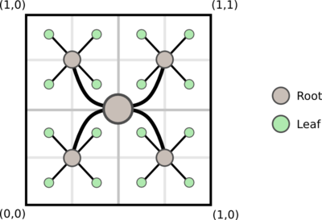
It may look like we're building a full tree here, but that's not quite the case. Because Haskell is lazy, this tree will actually be constructed on an as-needed basis, so we need not feel guilty about building it naïvely.
Now, let's think about collapsing cells. Given a Shape function, we can mark
cells that are entirely filled or empty, then recursively collapse them:
collapse :: Shape -> Tree -> Tree
collapse shape leaf@(Leaf ((xmin, ymin), (xmax, ymax))) =
if all (< 0) values then Full
else if all (>= 0) values then Empty
else leaf
where values = [shape (x,y) | x <- [xmin, xmax],
y <- [ymin, ymax]]
collapse shape (Root a b c d) =
collapse' $ map (collapse shape) [a, b, c, d]
where collapse' [Empty, Empty, Empty, Empty] = Empty
collapse' [Full, Full, Full, Full] = Full
collapse' [q, r, s, t] = Root q r s t
collapse _ t = t
Here's what the first five quadtree levels look like on our example shape:
Note that the contour-containing cells are all Leaf cells (and vice versa):
- Cells whose corners are different signs are not collapsed
- Cells that intersect the isosurface have corners of different signs
Marching squares, which will be introduced shortly, operates on a single cell
at a time. To map it across all of the Leaf cells in the shape, let's make
the Tree_ type an instance of the
Foldable
typeclass:
instance Foldable Tree_ where
foldMap f (Leaf a) = f a
foldMap f (Root a b c d) = mconcat $
map (foldMap f) [a, b, c, d]
foldMap _ _ = mempty
This means we can easily map functions across every Leaf in the tree (or,
more strictly, across every Cell stored in a leaf). For example, consider
finding the centers of each leaf:
λ> let center ((x,y), (x',y')) = ((x+x')/2, (y+y')/2)
λ> foldMap (\cell -> [center cell]) $ buildTree (0,0) (1,1) 2
[(0.125,0.125),(0.375,0.125),(0.125,0.375),(0.375,0.375)
(0.625,0.125),(0.875,0.125),(0.625,0.375),(0.875,0.375),
(0.125,0.625),(0.375,0.625),(0.125,0.875),(0.375,0.875),
(0.625,0.625),(0.875,0.625),(0.625,0.875),(0.875,0.875)]
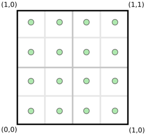
Marching Squares
Marching Squares is a fundamental algorithm for extracting isocontours from 2D samples.
Here's the idea: for every cell, we examine the corners, which match one of sixteen cases:
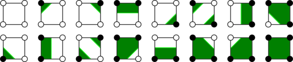
Each case creates between zero and two edges. Run this procedure on every contour-containing cell and you'll get your shape's contour.
To get started, we'll encode the 16 cases shown above in a lookup table named
lut.
data Side = Upper | Lower | Left | Right deriving Show
-- This lookup table takes a bitmask abcd and
-- returns a list of edges between which we
-- should draw contours (to outline the shape)
lut :: [[(Side, Side)]]
lut = [[], -- 0000
[(Upper,Right)], -- 000d
[(Left,Upper)], -- 00c0
[(Left,Right)], -- 00cd
[(Right,Lower)], -- 0b00
[(Upper,Lower)], -- 0b0d
[(Right,Lower),(Left,Upper)],-- 0bc0
[(Left,Lower)], -- 0bcd
[(Lower,Left)], -- a000
[(Lower,Left),(Upper,Right)],-- a00d
[(Lower,Upper)], -- a0c0
[(Lower,Right)], -- a0cd
[(Right,Left)], -- ab00
[(Upper,Left)], -- ab0d
[(Right,Upper)], -- abc0
[]] -- abcd
Next, we'll write helper functions that go from a Cell to an index in
the lookup table and then to a list of Side pairs.
index :: Shape -> Cell -> Int
index shape ((xmin, ymin), (xmax, ymax)) =
sum [if shape pt < 0 then 2^(3 - i) else 0 |
(pt, i) <- zip pts [0..]]
where pts = [(x,y) | y <- [ymin, ymax], x <- [xmin, xmax]]
edges :: Shape -> Cell -> [(Side, Side)]
edges shape c = lut !! index shape c
The edges function
gives us pairs of cell sides between which we should draw edges; however,
we need to pick the starting and ending point for each edge:
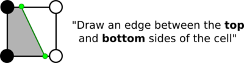
In the image above, how do we find the green points? Well, the green points should be points where the shape function is zero. We'll assume that the shape function is monotonic along the edge and use binary search:
pt :: Shape -> Cell -> Side -> Point
pt shape ((xmin, ymin), (xmax, ymax)) side =
case side of Left -> zero shape (xmin, ymin) (xmin, ymax)
Right -> zero shape (xmax, ymin) (xmax, ymax)
Lower -> zero shape (xmin, ymin) (xmax, ymin)
Upper -> zero shape (xmin, ymax) (xmax, ymax)
zero :: Shape -> Point -> Point -> Point
zero s a@(ax, ay) b@(bx, by)
| s a >= 0 = zero s b a
| otherwise = zero' 0.5 0.25 10
where pos f = (ax * (1-f) + bx * f, ay * (1-f) + by * f)
zero' f step i =
if i == 0 then pos f
else if s (pos f) < 0 then
zero' (f + step) (step / 2) (i - 1)
else zero' (f - step) (step / 2) (i - 1)
Finally, we can combine these functions into one that converts a cell into
a set of contours. Notice that this function can be applied to a tree with
foldMap!
type Edge = (Point, Point)
contours :: Shape -> Cell -> [Edge]
contours shape cell = [(pt' a, pt' b) |
(a, b) <- edges shape cell]
where pt' = pt shape cell
Applying this to a tree extracts the shape's contours:
λ> foldMap (contours hi) $ collapse hi $ buildTree (0,0) (1,1) 5
(factoring out hi with a monad is left as an exercise for the reader)
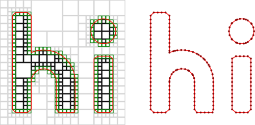
Sampled distance fields
There's an interesting nuance to our quadtrees: the collapse function treats
sampled data as a binary value (based on whether it's less than zero). Can we
do better by using the scalar value?
Consider the following quadtree (with one level of subdivision):
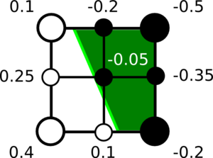
The internal samples have different boolean values (some are inside the shape, some are outside), but all of the internal sampled values can be reconstructed from the corner values using bilinear interpolation.
This means that we can merge the cells without losing any information!
(This idea appears in the literature as Adaptively Sampled Distance Fields).
This may seem like an uncommon occurance, but it turns out that this kind of merging is possible whenever a cell's distance field is entirely determined by a single line (or face in 3D). When working with flat surfaces, this happens a lot!
Let's write some code to do this kind of reduction. First, we'll create functions that measure the error that would be introduced by this kind of merging:
-- interpolate samples a Shape at the four corners of a Cell,
-- then uses those values to estimate the function's result at
-- an arbitrary (x,y) position
interpolate :: Shape -> Cell -> Point -> Double
interpolate shape ((xmin, ymin), (xmax, ymax)) (x,y) =
let dx = (x - xmin) / (xmax - xmin)
dy = (y - ymin) / (ymax - ymin)
ab = (shape (xmin, ymin)) * (1 - dx) +
(shape (xmax, ymin)) * dx
cd = (shape (xmin, ymax)) * (1 - dx) +
(shape (xmax, ymax)) * dx
in ab * (1 - dy) + cd * dy
-- score returns the difference between an interpolated
-- estimate and the function value at a given point
score :: Shape -> Cell -> Point -> Double
score shape cell pt = abs $
(interpolate shape cell pt) - shape pt
Now, we can use the score function and a user-defined cutoff to decide whether to merge a set of leaf cells. Note the names for nodes and cells:
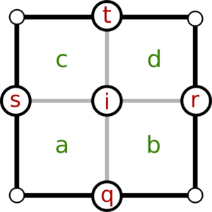
merge :: Shape -> Tree -> Tree
merge shape (Root a b c d) =
merge' a' b' c' d'
where [a', b', c', d'] = map (merge shape) [a, b, c, d]
merge' (Leaf (min, i)) (Leaf (q, r))
(Leaf (s, t)) (Leaf (_, max)) =
let scores = map (score shape (min, max))
[i, q, r, s, t]
in if all (< 0.001) scores
then Leaf (min, max)
else Root a' b' c' d'
merge' _ _ _ _ = Root a' b' c' d'
merge _ t = t
We apply this function before calling collapse to produce a sparser quadtree:
λ> collapse hi $ merge hi $ buildTree (0,0) (1,1) res
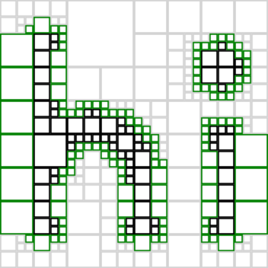
As expected, we now see larger leaf cells containing a single flat edge.
We can use the same contouring strategy on this sparser quadtree, producing a contour with fewer samples along flat edges:
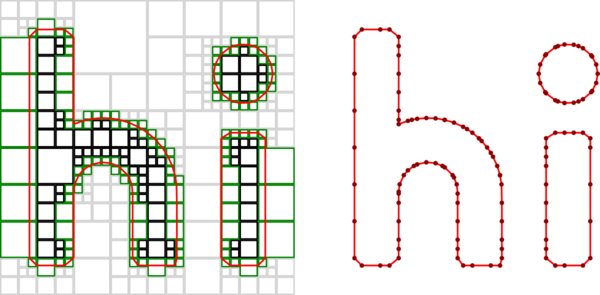
This seems too easy — what's the catch?
Our meshing strategy assumed that all leaf cells were the same size, so a pair of leaves that shared an edge performed the same zero-crossing search. Now, with leaves of different sizes, the zero-crossing search will not be numerically identical, so the edges will not quite touch:
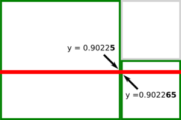
This becomes a more significant issue in 3D: naïvely meshing a hierarchical structure will leave cracks in between cells of different sizes.
Dual contouring
Dual Contouring addresses two issues:
- Cracks between cells of different sizes
- Corners being bevelled
It does so by considering the dual graph of the quadtree. Instead of each leaf containing zero or more edges, each leaf stores a vertex; we connect these vertices to create the contour.
In this image, the original quadtree is drawn in light grey and the dual grid is shown in black.
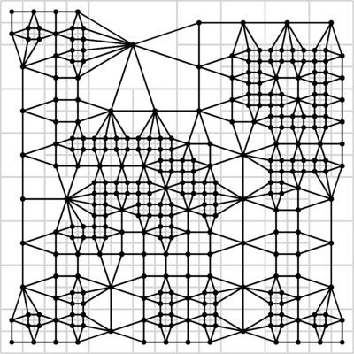
There are three important questions to answer:
- How do we choose which edges of the dual graph belong to the contour?
- How do we position the vertices of the dual graph within cells?
- How do we construct the dual graph?
To answer the first question, we want to draw an edge between any two cells that share a side with a sign change.
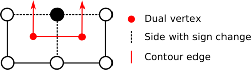
The answer to the second question is more subtle: we want to position vertices of the dual graph on features of the original shape. For example, in a cell containing a corner, the vertex should be on that corner. This strategy allows the algorithm to preserve sharp features.
We'll find features by looking at the normals of the shape function, which are given by its partial derivatives. In the past, I've written my own automatic differentiator; here, we'll do it numerically:
deriv :: Shape -> Point -> Point
deriv shape (x,y) =
let epsilon = 0.001
dx = shape (x + epsilon, y) - shape (x - epsilon, y)
dy = shape (x, y + epsilon) - shape (x, y - epsilon)
len = sqrt $ dx**2 + dy**2
in (dx / len, dy / len)
A circle's partial derivatives are always pointing outwards from the center:
λ> deriv (circle (0,0) 1) (0,1)
(0.0,1.0)
λ> deriv (circle (0,0) 1) (1,1)
(0.7071067811865476,0.7071067811865476)
λ> deriv (circle (0,0) 1) (1,0)
(1.0,0.0)
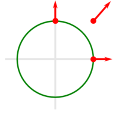
To find a feature in a cell, we find the position and normal of every point along the cell's sides that intersects the isosurface, then perform a least-squares fit to estimate the feature position.
This is the same technique I use in Antimony, though we'll skip the sanity-checking for simplicity. The details are described in Feature Sensitive Surface Extraction from Volume Data.
The code below uses the HMatrix library for matrix math.
feature :: Shape -> Cell -> Maybe Point
feature shape cell =
if length pts_ >= 2 then
let pts = map fromTuple pts_
nms = map (fromTuple . deriv shape) pts_
center = sum pts / (fromIntegral $ length pts)
a = fromRows pts
b = col $ zipWith (\pt nm -> (pt - center) <·> nm)
pts nms
p = center + (toColumns $ linearSolveSVD a b) !! 0
in Just $ (\[x,y] -> (x,y)) $ (toList p)
else Nothing
where pts_ = concatMap (\(a,b) -> [a,b]) $ contours shape cell
fromTuple = \(x,y) -> fromList [x,y]
We can run this function across every leaf cell to see where vertices are placed:
λ> let tree = collapse hi $ merge hi $ buildTree (0,0) (1,1) 5
λ> catMaybes $ foldMap (\cell -> [feature hi cell]) tree
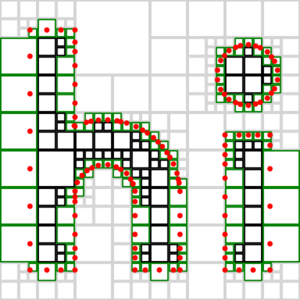
This looks promising! There's one remaining step: to link these points together into a shape-outlining contour.
We use a set of three recursive functions to isolate edges of the dual graph. They're tricky, so I'll present them three times: in a diagram, in plain English, and in code.
First, the diagram:
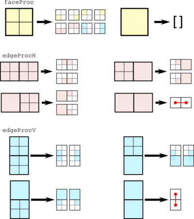
faceProc is called on one cell. If that cell is a leaf, then it returns
nothing. If that cell is a root, it recurses by calling faceProc on each
subtree, edgeProcH on each horizontal pair of cells, and edgeProcV on each
vertical pair of cells.
edgeProcH is called on a pair of cells. If both are leafs, it creates a
contour edge between the two cells. Otherwise, it recursively calls itself
on two horizontal pairs of cells.
edgeProcV is identical to edgeProcH, but applies to vertical pairs of
cells.
Now, in code:
dc :: Shape -> Tree -> Edge
dc = faceProc
faceProc :: Shape -> Tree -> [Edge]
faceProc shape (Root a b c d) =
concatMap (faceProc shape) [a,b,c,d] ++
edgeProcH shape a b ++ edgeProcH shape c d ++
edgeProcV shape a c ++ edgeProcV shape b d
faceProc _ _ = []
edgeProcH :: Shape -> Tree -> Tree -> [Edge]
edgeProcH shape (Leaf a) (Leaf b) =
[(fromJust $ feature shape a, fromJust $ feature shape b)]
edgeProcH shape leaf@(Leaf _) (Root a _ c _) =
edgeProcH shape leaf a ++ edgeProcH shape leaf c
edgeProcH shape (Root _ b _ d) leaf@(Leaf _) =
edgeProcH shape b leaf ++ edgeProcH shape d leaf
edgeProcH shape (Root _ b _ d) (Root a _ c _) =
edgeProcH shape b a ++ edgeProcH shape d c
edgeProcH _ _ _ = []
edgeProcV :: Shape -> Tree -> Tree -> [Edge]
edgeProcV shape (Leaf a) (Leaf b) = [(fromJust $ feature shape a,
fromJust $ feature shape b)]
edgeProcV shape (Root _ _ c d) leaf@(Leaf _) =
edgeProcV shape c leaf ++ edgeProcV shape d leaf
edgeProcV shape leaf@(Leaf _) (Root a b _ _) =
edgeProcV shape leaf a ++ edgeProcV shape leaf b
edgeProcV shape (Root _ _ c d) (Root a b _ _) =
edgeProcV shape c a ++ edgeProcV shape d b
edgeProcV _ _ _ = []
This completes our implementation of Dual Contouring:
λ> dc hi $ collapse hi $ merge hi $ buildTree (0,0) (1,1) res
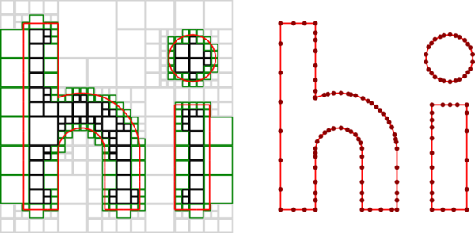
At this point, we'll declare victory: the contour is a faithful representation of the original shape and point density along the contour scales with local complexity / curvature.
There's plenty more to dive into in the literature, with references below.
Thanks to Richard Bowen and Michael Gilik for their feedback on an early draft.
Download the source here (including code used to generate diagrams).
References
Papers
- Marching cubes
- Feature Sensitive Surface Extraction from Volume Data
- Adaptively Sampled Distance Fields
- Dual Contouring
- Dual Marching Cubes
- Cubical Marching Squares
Other sources
- Dual Marching Cubes (presentation)
- Cubical Marching Squares (video)